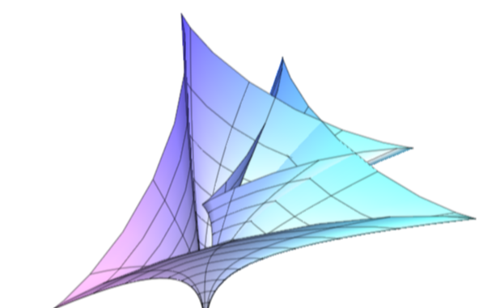

Benoît Bonnet-Weill
Research
Teaching
Talks and news
CV
Recent and upcoming events
I coorganised a workshop on the theme of
Variational Problems in Measure Spaces
at the
CIRM in April 2024, together with
Massimo Fornasier
,
Hélène Frankowska
and
Giuseppe Savaré
.
I presented our recent work on Koopman operators with
Milan Korda
at the seminar of the
Mathematics Department of the University of Namur
(April 15).
I attended the
FGS on Optimization
at Gijon to present the work we did on the meanfield control
approach to NeurODEs with
Cristina Cipriani
,
Massimo Fornasier
and
Hui Huang
(June 17 - 20).
I attended the Oberwolfach seminar on
Polynomial Optimization for Nonlinear Dynamics:
Theory, Algorithms, and Applications
(July 28 - August 2).
I presented some of my work on multiagent dynamics in collaboration with
Mario Sigalotti
at the
2024 Conference on Decision and Control
that will take place in Milano (December 18).
I will present some of my work with
Mario Sigalotti
and
Nastassia Pouradier Duteil
on consensus
formation in graphon dynamics at the IMSI workshop
Emergent Behavior in Complex Systems
of Interacting Agents
organised in the honour of
Eitan Tadmor
(March 17 - 20).
Laboratoire des Signaux et Systèmes, CentraleSupélec
Bâtiment Breguet,
3 rue Joliot Curie
91190 Gif-sur-Yvette, France
Best AI Website Maker